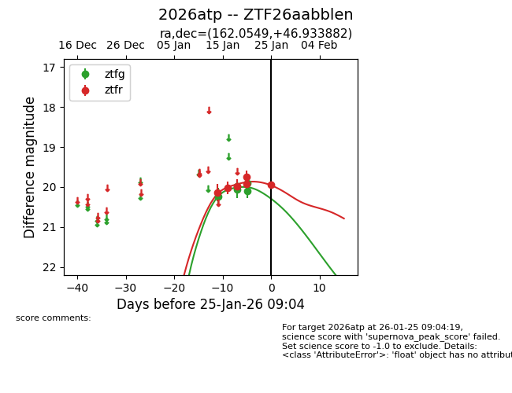
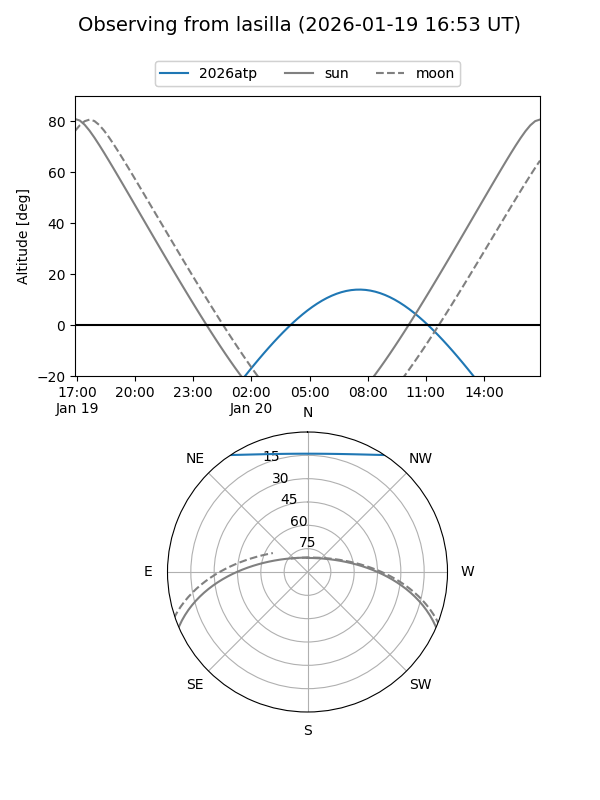
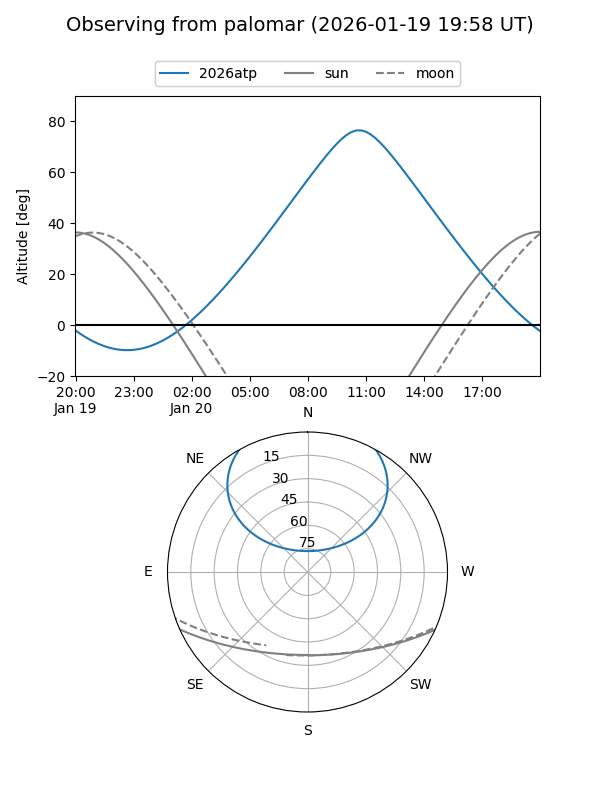
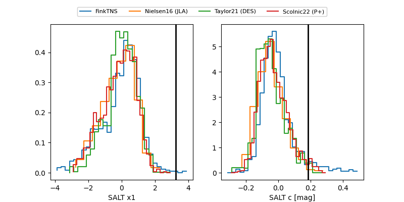

2026atp
Target 2026atp at 2026-01-20 08:06
Aliases and brokers:
FINK: link
Lasair: link
ALeRCE: link
TNS: link
YSE: link
alt names
ZTF26aabblen (ztf,fink_ztf)
2026atp (tns,yse)
Coordinates:
equatorial (ra, dec) = 162.0549,+46.93388
equatorial (HMS+DMS) = 10:48:13.17,+46:56:01.98
galactic (l, b) = (165.3470,+58.77183)
Flags:
Photometry:
last ztfg=20.07, ztfr=19.99
3 ztfg, 3 ztfr detections
Lightcurve

Visibility


Additional plots
